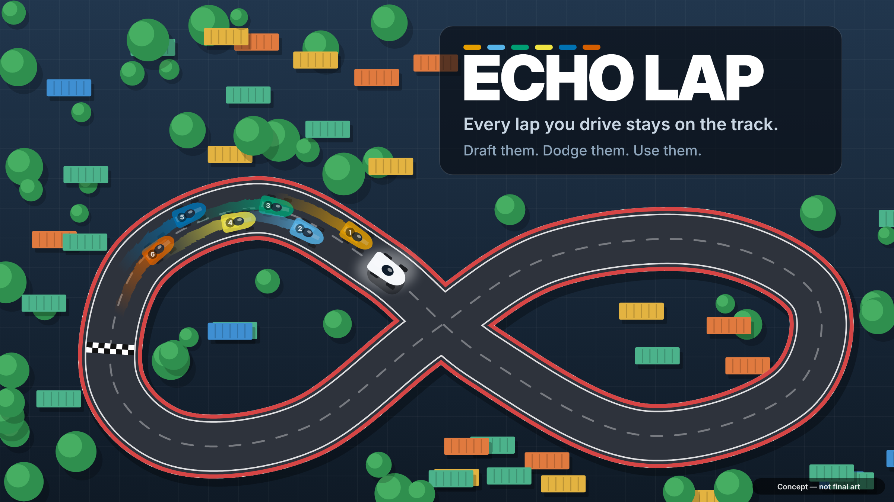
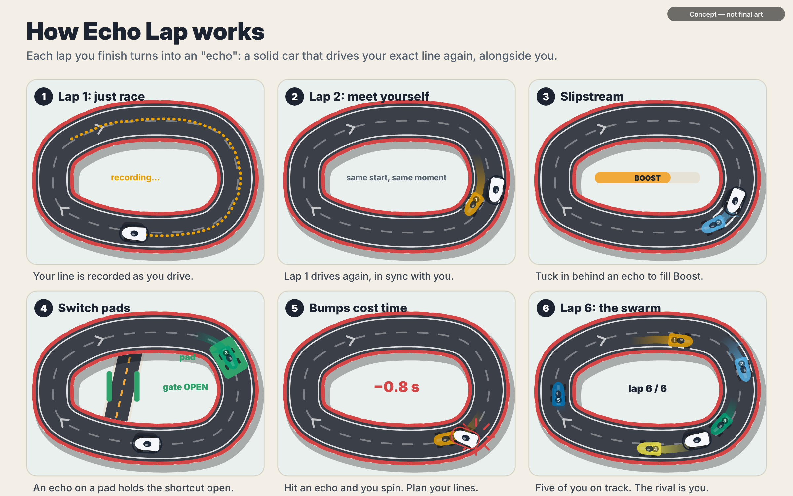
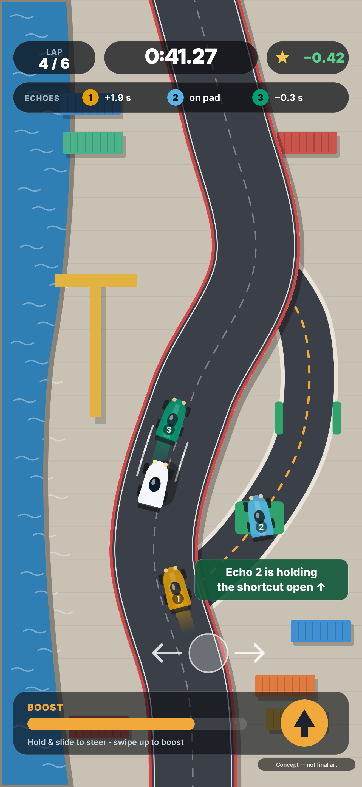
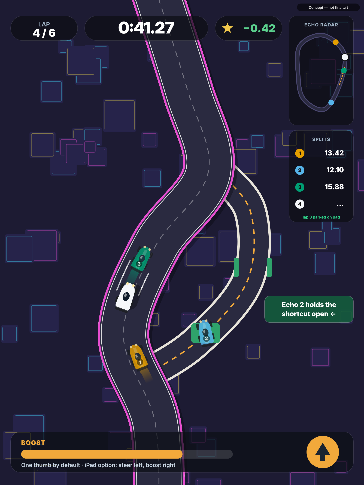
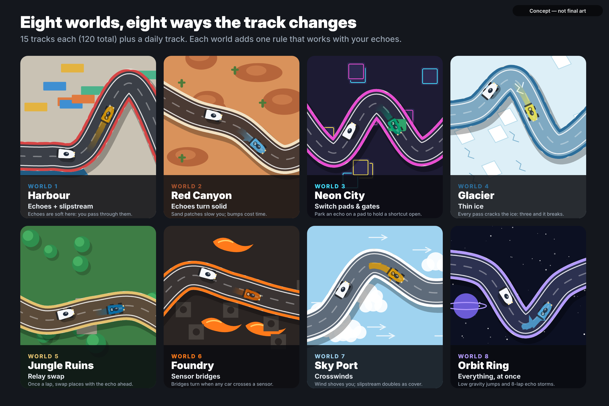
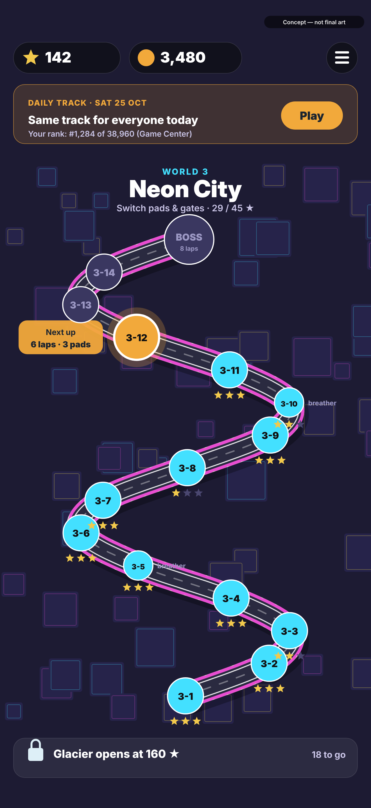
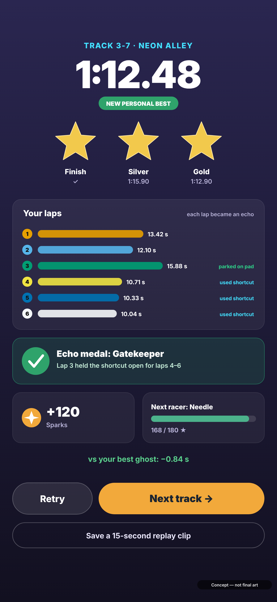
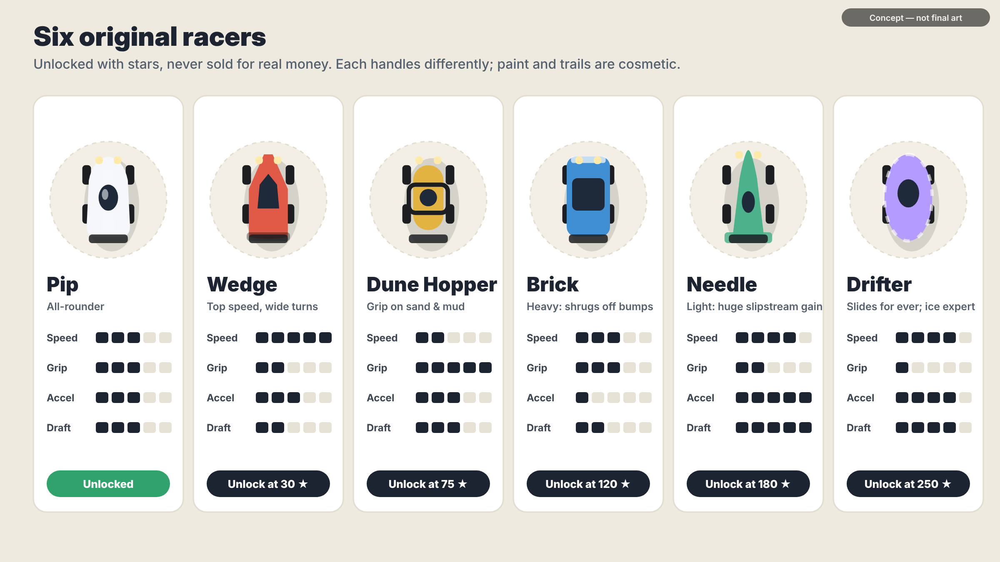

Every lap you drive stays on the track. Each finished lap becomes an echo: a solid car that replays your exact line beside you. Draft your echoes for boost, park one on a switch to hold a shortcut open, and dodge your own old mistakes. By lap 6 you are racing five versions of yourself.

Pick these and Stage 2 starts: a version you can play in the iPhone browser, plus every screen designed.
| Decision | Recommendation | Why |
|---|---|---|
| 1. Concept | Echo Lap runner-up: Fold | Best mix of feel, one-thumb play, depth and buildability; answers the top player complaints. |
| 2. Name | Echo Lap echolap.com is available | Says what the game is. App Store name check still to do. |
| 3. View | Top-down 2.5D (SpriteKit) | Faster to build, small download, easy to tune remotely; echoes read best from above. |
| 4. Orientation | Portrait on iPhone, either way on iPad | One-handed play is part of the pitch, and few racers are portrait. |
| 5. Repo | Private | The twist is the product. The repo is public today, so nothing from this stage has been pushed yet. |
33 racing games were ranked by App Store ratings (60%) and lifetime downloads (40%), each on a log scale. Games pulled from the store, and driving sims where racing isn't the point, were left out.
| # | Game | Ratings | Downloads | Type | What players say |
|---|---|---|---|---|---|
| 1 | Race Master 3D | 570K | 457M | Hyper-casual, portrait | Instant and simple; an ad after every race |
| 2 | Asphalt Legends | 1.1M | 100M+ | Licensed 3D arcade | Stunning; pay-to-win, fuel limits, ads |
| 3 | Bike Race | ~1M | 73M iOS | Side-view bike trials | Quick levels, flips; to re-check |
| 4 | Need for Speed No Limits | 394K | 383M | Licensed 3D street | Great visuals; blueprint grind, fuel |
| 5 | CSR Racing 2 | 882K | 50M+ | Drag timing, no steering | Car collecting; "bombarded with deals" |
| 6 | Asphalt 8: Airborne | 225K | 561M | 3D arcade stunts | Big jumps; the clean Arcade edition is praised |
| 7 | Hill Climb Racing | 135K | 912M | Side-view physics | Physics comedy; optional reward ads liked |
| 8 | Hill Climb Racing 2 | 180K | 426M | Side-view physics | "Advertising without end"; drift to paying |
| 9 | Rebel Racing | 211K | 50M+ | Licensed 3D road | Not reached within the search budget |
| 10 | Drive Ahead! | 149K | 100M+ | Side-view car combat | Great for quick games; "fickle physics" |
Ratings are US App Store counts from search snippets where found. "100M+" figures are Google Play floors. Rider and Traffic Rider are within 3 points of #9–10. Real Racing 3 would have ranked but was pulled from the App Store on 18 Dec 2025.
Every one-thumb racer is shallow, and every deep one needs two hands, car licences, big downloads and aggressive selling. The crowded lanes to avoid are licensed 3D supercars, highway traffic weaving, drag timing and above all the side-view hill-climb look, where Apple has rejected lookalikes as copycats.
Each idea was checked against existing games first. Nine criteria, 1–5 each.
| Twist | Idea | Closest existing game | Score /45 |
|---|---|---|---|
| Echo Lap | Finished laps become solid echoes you draft, dodge and park on switches | Does Not Commute (2015 commute puzzle, echoes as obstacles only); two free jam games | 39 |
| Fold | Fold the paper map to bring a far stretch of road next to you | None among racers | 35 |
| Pulse Track | Track sections shift on a beat | Music racers build tracks but don't shift them | 34 |
| Track Layer | Lay road tiles ahead of your car | Infinity Track (with a train) | 31 |
| Gravity Flip | Flip the world, drive on the ceiling | Monorace (2010) | 31 |
| Ink Line | Draw your racing line | DrawRace 1 & 2 (2009, 2011) | 29 |
The trade-off. Echo Lap is the strongest game: top marks for feel, one-thumb play, buildability and depth. Fold is the most original idea, with nothing like it among racers, but it is harder to build and to steer with one thumb. Echo Lap is still first when novelty counts double (42 vs 40). What it adds over Does Not Commute: echoes are tools (slipstream, switches, swaps, thin ice), and it is a full racing game with stars and target times.



Touch anywhere on the lower half and slide left or right to steer; the car accelerates by itself. Hard steering at speed drifts, with a haptic buzz. Swipe up to boost. From World 5, double-tap to swap places with the echo ahead, once per lap. Tilt and an iPad two-thumb layout are options; touch is always available.

Each world adds one rule that works with echoes, so the track changes as you race, because your own earlier laps change it. Tracks are generated from a seed and tested by a robot driver using the real physics; its best time sets the gold and silver targets. The daily track comes from a pre-checked list of seeds shipped in the app, so there are no servers.
| Setting | Track 1 | 30 | 60 | 90 | 120 |
|---|---|---|---|---|---|
| Laps | 2 | 3–4 | 4–5 | 5–6 | 6–8 |
| Lap length (robot pace) | 14 s | 18 s | 23 s | 27 s | 32 s |
| Track width (car widths) | 3.2 | 3.0 | 2.7 | 2.5 | 2.2 |
| Bump penalty | soft | 0.6 s | 0.7 s | 0.85 s | 1.0 s |
| Gold = robot time + | 12% | 9% | 6% | 4% | 2% |
Every 5th track is a 2-lap breather; every 15th is a boss track with an extra lap.


1–3 stars per track, an optional echo medal, Sparks for cosmetics, 6 racers unlocked by stars, daily goals, a daily-track leaderboard and streaks, a weekly gauntlet, and your best-run ghost.
Energy, timers, paid random rewards, stat upgrades for sale, or ads between races. Offline, no account; privacy label "Data Not Collected".

| Option | What it is | Why it isn't pay-to-win |
|---|---|---|
| World packs | New worlds of 15 tracks and a new rule, one-off price | Adds content; existing leaderboards untouched |
| Cosmetic sets | Paint, trail and horn, shown in full before buying | Looks only |
| Supporter pack | All base cosmetics and a badge | Looks only |
| Circuit Pass | 30 days of fixed cosmetic rewards for daily play; free track for all | No randomness, no speed |
| Tip jar | Optional thank-you tiers | Nothing gameplay-related |
Version 1 ships with everything included. Nothing already in the game is ever locked away later.
| Risk | Plan |
|---|---|
| Hard to read with many echoes | Colour plus lap number on each, older echoes fade, test with 8 early |
| Bumping your own echoes feels unfair | Soft echoes in World 1, gentle penalties, instant restart, optional assist |
| Compared with Does Not Commute | Centre the pitch on using echoes in a racing game; a one-page originality note for App Review |
| Steering feel | Browser prototype first, then tuning rounds on your iPhone via TestFlight |
| Scope of 120 tracks | Generator and robot driver; only 8 boss tracks tuned by hand |
| Name | .com domain | App Store clash |
|---|---|---|
| Echo Lap | echolap.com available | to check |
| Lapback | lapback.com available | to check |
| Overlap Racer | overlapracer.com available | to check |
| Afterlap | afterlap.com taken afterlapgame.com available | to check |
| Lap Echoes | lapechoes.com available | to check |
Domains checked with GoDaddy on 25 Oct 2026; no prices returned.
This session's network policy blocked Apple's servers and most websites. Every figure came from web-search snippets, each stored with its source URL in the repo. The 200-search limit per turn ran out before every check was done.
Not done yet: reading 300+ App Store reviews per game (the scripts are ready and need itunes.apple.com allowed), App Store name checks for the shortlist, and re-checking game details marked as prior knowledge, mainly Rebel Racing and Bike Race.
Files: research/top10-racing-apps.md · research/data/ · concept/concept-brief.md · concept/images/ · GATE-1.md